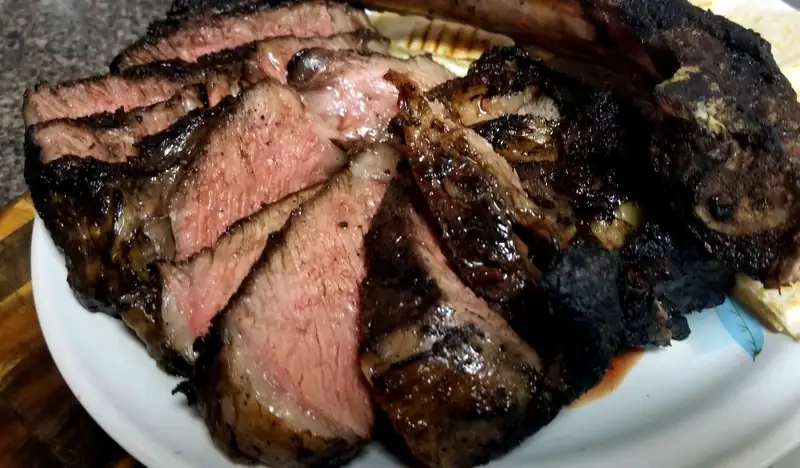

Tomahawk
No voya abogar por las modas, pero si te encuentras un tomahawk por el mismo precio que lo que te costar√≠a comprar un par de pedazos de new york, pues daaaaate!! Bueno, si no sabes lo que es un tomahawk, no has de frecuentar ni blogs de comida ni instagram de foodies, as√≠ que qu√© haces aqu√≠? ... no es cieeerto üòú... el "corte" de tomahawk obtiene su nombre por la similitud que tiene con las armas que usaban los indios nativos de estados unidos. El corte b√°sicamente es un rib eye con el hueso de la costilla muy largo para que parezca el mango del hacha. ES UN RIBEYE!! Muy fantochona la cosa, por el exceso del hueso si lo pidieras en un restaurante, pero pues... ES UN RIBEYE!!
En fin para este corte decidí intentar una nueva técnica, en vez de sellar y dejar a fuego lento para llegar a la temperatura deseada, hice lo inverso, a. k. a. reverse sear . Es decir, se pone a fuego leeeeeento por bastante tiempo hasta que llega a la temperatura deseada, en este caso ~130F.
{kind=link}
Normalmente se prescribe poner el corte en el horno a ~200F. En una parrilla, aunque sea de gas result√≥ ser mas dif√≠cil de lo que quisiera admitir, pero de que se logr√≥ le logr√≥! üòÅ Es muy interesante como evoluciona la carne:
- Empieza a temperatura ambiente así que la grasa y los tejidos conectivos están firmes.
- Cuando rebasa los ~100F la carne se empieza a ablandar y la grasa se empieza a derretir.
- Cuando pasas por alrededor de 110F pasa de grisácea a café, pero no de un color agradable.
Adem√°s, para sellar la carne tambi√©n us√© una nueva t√©cnica para hacer que la parilla se caliente m√°s... MUCHO m√°s. Lo v√≠ en youtube hace algunos meses: cubres el √°rea de la parrilla donde piensas sellar (no tiene que ser carne, obviamente) con papel aluminio. Lo que permite esto es que el calor que sube del asador, llega a la parrilla y el aluminio lo refleja. Hoy cuando le apliqu√© esto a la parrilla com√∫n, que estaba no-tan-limpia, por cierto, hizo que se quemara todo lo que ten√≠a carbonizado en el metal; parec√≠a como el escape de un cohete! üòÅüòÅüòÅ

{kind=link}
El resultado: bastante mejor de lo que queda con el método tradicional, 3/4 que era lo esperado y con muy poca área gris
{kind=link}
{kind=link}
snap peas
{kind=link}
Y bueno para una buena carne, un vino de una región muy carnívora: Elegancia de Bernard Magrez
que est√° compuesto de